Reject an image by adding its slug to public/charades/charades-movies/reject.txt (append ! to keep it word-only), then re-run node scripts/genimages.mjs.
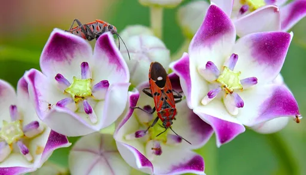
A Bug’s Life a-bug-s-life CC BY 2.0 · Vikramdeep Sidhu from Jhajjar, India · source
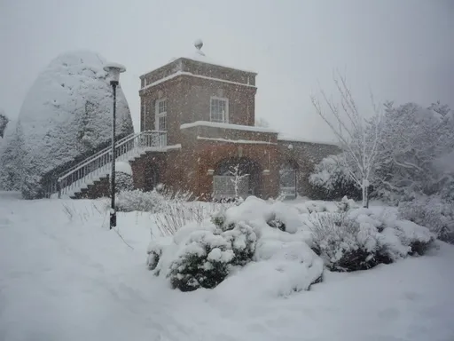
A Quiet Place a-quiet-place CC BY-SA 2.0 · DS Pugh · sourceAir Bud air-bud CC BY 4.0 · Kevin Paul · source
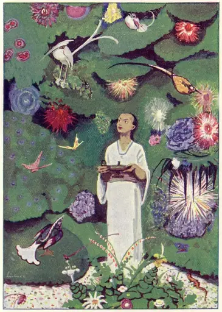
Aladdin aladdin Public domain · From Aladdin und die Wunderlampe, by Ludwig Fulda, Illustrated by Max Liebert. · source
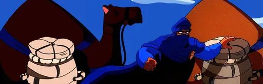
Aladdin and the King of Thieves aladdin-and-the-king-of-thieves Public Domain Mark · michael.faccas · source
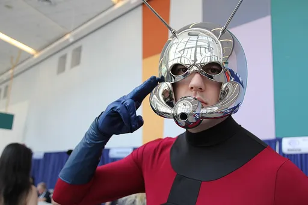
Ant-Man ant-man CC BY-SA 2.0 · William Tung · source
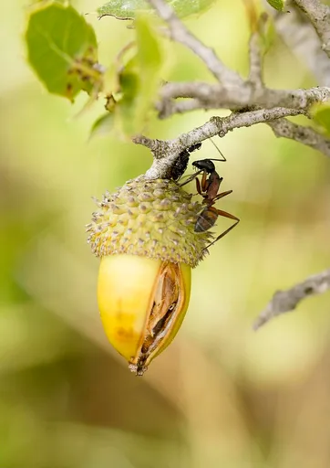
Antz antz CC BY-SA 2.0 · Ferran Pestaña from Barcelona, España · source
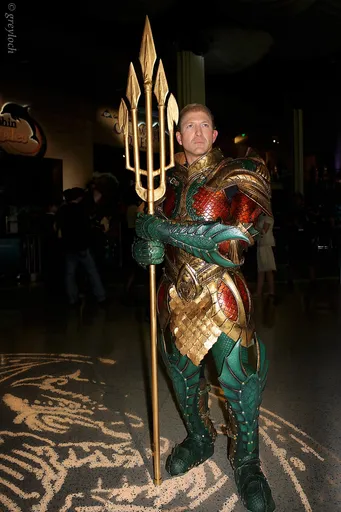
Aquaman aquaman CC BY-SA 2.0 · greyloch from Washington, DC, area, U.S.A. · sourceArrested Development arrested-development CC BY 2.0 · Joris Peeters · source
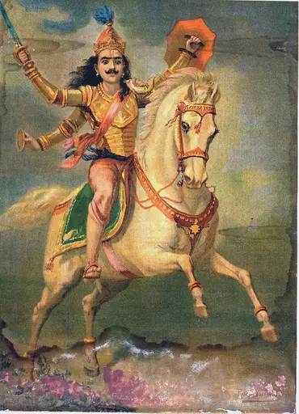
Avatar avatar Public domain · Raja Ravi Varma · sourceAvengers avengers CC BY 3.0 · Bollywood Hungama · source
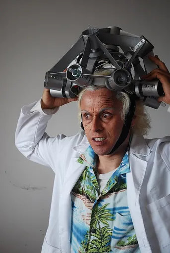
Back to the Future back-to-the-future CC BY 2.0 · Miguel Vaca from Bogotá, Colombia · source
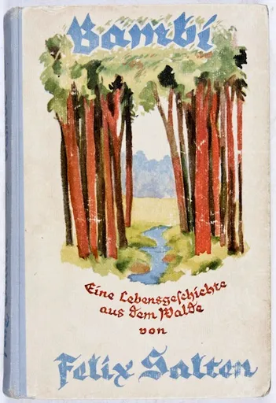
Bambi bambi Public domain · Hans Bertle · sourceBatman batman Public domain · Ferhat 72 at Turkish Wikipedia · source
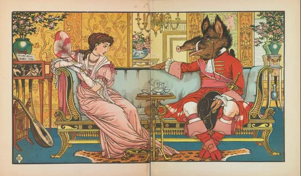
Beauty and the Beast beauty-and-the-beast Public domain · Walter Crane · source
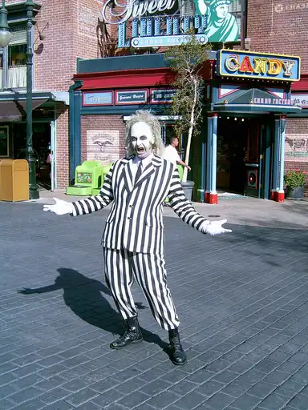
Beetlejuice beetlejuice CC BY 3.0 · Mr Bullitt from Sweden · sourceBig Hero 6 big-hero-6 CC BY 2.0 · Dick Thomas Johnson · source
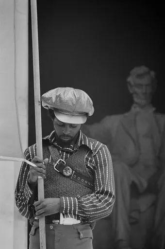
Black Panther black-panther Public domain · O'Halloran, Thomas J., photographer.; Leffler, Warren K., photographer. For US News and World Report. · source
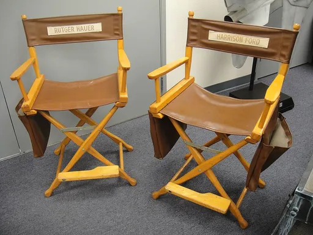
Blade Runner blade-runner CC BY 2.0 · pop culture geek from Los Angeles, CA, USA · sourceBrave brave CC BY 4.0 · SJ · source